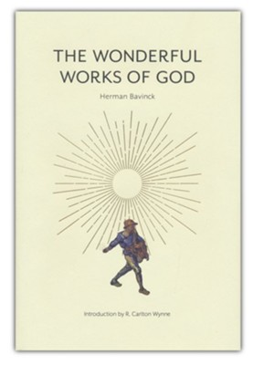

The Wonderful Works of God
Our Reasonable Faith
Westminster Seminary Press · Dogmatics
ISBN 9781733627221
About the book
Herman Bavinck's The Wonderful Works of God is a warm, accessible one-volume dogmatics drawn from his monumental Reformed Dogmatics. Written for the church rather than the academy, it traces the whole sweep of the faith — from the knowledge of God and creation, through the person and work of Christ, to the Spirit, the church, and the life to come.
This Westminster Seminary Press edition restores Bavinck's classic to print in a handsome, readable format.
The Picky Reader note: a foundational title we think every reader should own. We'll add our own take when we revisit it.
← Back to the library Get the weekly email
Disclosure: The Picky Reader may earn a commission from purchases made through our links, at no extra cost to you.